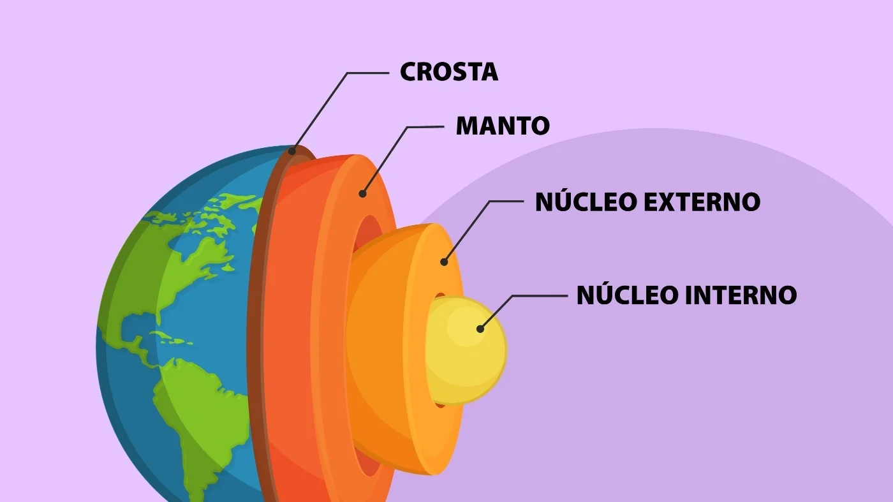

Material é composto principalmente de uma esfera de ferro líquido submetida a temperaturas superiores a 4 mil graus
Conduzida por cientistas da Universidade do Sul da Califórnia (USC), uma pesquisa comprovou que o núcleo da Terra está em processo de desaceleração se comparado com a superfície do planeta. Publicada na revista científica Nature, nesta quarta-feira, o estudo ainda não consegue estimar quais seriam as consequências do fenômeno, mas acreditam que a duração dos dias pode sofrer alterações.
Durante as últimas décadas, algumas pesquisas sugeriram que a rotação do núcleo interno da Terra é mais rápida do que o empregado na superfície do planeta. O novo estudo dos americanos, no entanto, diverge da questão e aponta que, na verdade, o “recheio” da Terra tem apresentado desaceleração desde 2010, chegando a se mover mais lentamente do que a superfície.
